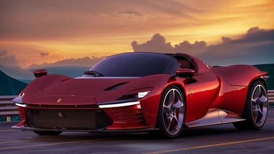

Explora la Vanguardia Automotriz: Autos del Mañana

En nuestro sitio, te invitamos a sumergirte en el emocionante universo de los autos del mañana. Desde vehículos eléctricos hasta conceptos autónomos, exploramos las innovaciones más recientes y visionarias que están moldeando el futuro de la movilidad.
Únete a nosotros en este viaje hacia la vanguardia automotriz y descubre las tecnologías que están transformando la forma en que nos desplazamos."
Desde mi punto de vista, En mi visión del futuro, me imagino un mundo donde los vehículos eléctricos son la norma y donde la autonomía ya no es una meta lejana, sino una realidad cotidiana. Desde autos que se conducen solos hasta aquellos que se alimentan de energía solar, las posibilidades parecen infinitas y emocionantes. Mi pasión es guiarte en este viaje hacia la vanguardia automotriz, donde cada giro del camino nos sorprende con nuevas e increíbles innovaciones.
En los últimos años, los autos han experimentado avances sorprendentes. Desde mejoras en la seguridad hasta innovaciones en la eficiencia energética, la industria automotriz ha estado en constante evolución. Los nuevos modelos ofrecen características como la conducción autónoma y la conectividad inteligente, haciendo que los viajes sean más seguros y cómodos que nunca. Con cada avance, los autos están cambiando la forma en que nos movemos y cómo interactuamos con la tecnología en la carretera.